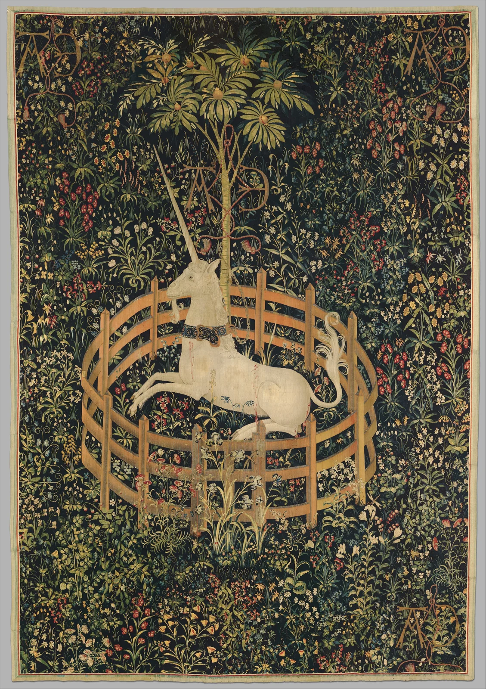

花园中休憩的独角兽佚名设计者与织工 · 1495–1505 年 · 挂毯

花草占满了画面，白色的身体却让目光停下来。
椭圆围栏收拢花地；横卧身体，对上直立树干。
黄绿邻近色织成底场；红绿局部近互补，白色赢在明度。
细微深浅塑出身体；暗地托亮，不依赖强烈投影。
视觉分析依据数字复制图。
羊毛经线；羊毛、丝、银与镀金纬线交织成像。
佚名设计者与织工。法国设计稿，南尼德兰织造。
在我看来，低围栏既是限制，也像为脆弱之物留出的栖身处。
边缘铺小纹样，中央留完整主形；缩小检查，主角仍要一眼可辨。
60% 墨绿 / 25% 橄榄12% 象牙白 / 3% 暗红
编辑练习色，非原物测色。
佚名设计者与织工 · 1495–1505来源：大都会艺术博物馆 · 37.80.6
版权归原作者；馆方图像：公有领域 / CC0。赏析为独立观点。